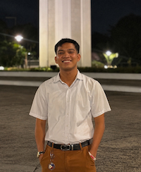

Kerr Raphael Asurto | WDD 130.

Hello! I'm Kerr Raphael J. Asurto, from Philippines. I'm studying computer engineering in our local university and also studying web and computer programming online in BYU idaho through BYU pathway. My hobbies are playing chess, drawing portraits, and reading comics. My favorite morning routine is reading the Book of Mormon, writing in my journal, and doing my exercise. I chose this course out of curiosity and it is connected to the course which is Computer engineering that I took in the local university that I'm attending. As I study this course, I find it really fun and it builds my creativity by allowing me learn codes that creates program I want to make. I'm excited to learn more about Web programming and use it for my future career.